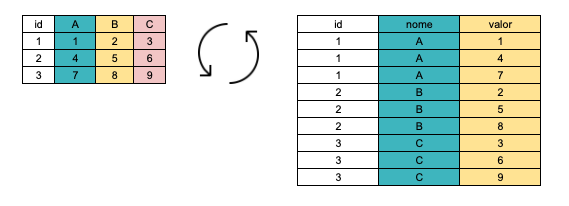
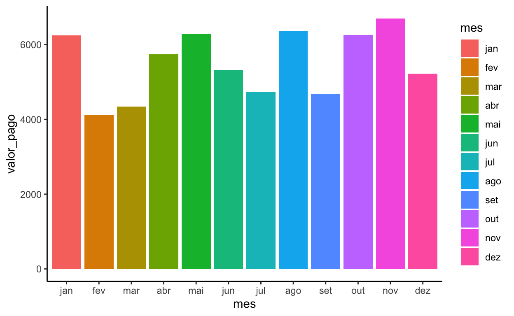

Nesta postagem, eu mostro como converter dataframes e tabelas entre os formatos wide e long tanto no R quanto no PostgreSQL, além de permitir realizar essas operações no banco a partir do R.
Neste tutorial, mostraremos como pivotar no R e no PostgreSQL. Pivotar, como o próprio nome sugere, significa rotacionar colunas ou linhas, de modo que, valores contidos em linhas, passam a ser colunas e vice-versa. Em ciência de dados, é mais comum falarmos em formatos wide e formato long. Em SQL, é mais comum falarmos em pivoting e unpivoting, respectivamente. A imagem abaixo ilustra o processo de pivotatem:

Este tutorial cobre as situações mais simples de pivotagem. No dia a dia da cientista de dados ou da DBA, dataframes e tabelas apresentam-se como estruturas um tanto complexas, as quais exigem transformações prévias para não haver perda de dados ou mesmo resultados indesejados.
Para começar, vamos importar um simples dataframe em formato wide com os ids dos clientes e pagamentos realizados em cada mês no ano. Se você já tem um banco PostgreSQL rodando, aproveite para escrever esse mesmo dataframe no banco. O dataframe encontra-se aqui
| cliente | jan | fev | mar | abr | mai | jun | jul | ago | set | out | nov | dez |
|---|---|---|---|---|---|---|---|---|---|---|---|---|
| 1 | 790 | 205 | 724 | 724 | 388 | 490 | 112 | 483 | 230 | 385 | 877 | 317 |
| 2 | 612 | 513 | 281 | 360 | 839 | 727 | 953 | 956 | 133 | 763 | 192 | 490 |
| 3 | 250 | 414 | 142 | 460 | 555 | 223 | 213 | 240 | 410 | 502 | 955 | 543 |
| 4 | 741 | 994 | 365 | 113 | 974 | 525 | 875 | 445 | 908 | 845 | 444 | 370 |
| 5 | 117 | 101 | 395 | 335 | 612 | 765 | 163 | 839 | 516 | 234 | 361 | 614 |
| 6 | 828 | 139 | 137 | 943 | 552 | 767 | 654 | 858 | 379 | 823 | 489 | 269 |
| 7 | 722 | 281 | 380 | 594 | 727 | 617 | 612 | 344 | 441 | 731 | 968 | 201 |
| 8 | 606 | 968 | 749 | 627 | 336 | 938 | 159 | 466 | 319 | 867 | 733 | 896 |
| 9 | 629 | 338 | 525 | 978 | 557 | 158 | 827 | 871 | 645 | 356 | 797 | 953 |
| 10 | 955 | 174 | 644 | 602 | 749 | 110 | 171 | 870 | 692 | 757 | 882 | 570 |
Perceba que os dados estão em formato wide. Cada mês ocupa uma coluna.
Pivotagem é ubiqua tanto em ciência de dados quanto em SQL. Nos grupos do Telegram R Brasil e PostgreSQL BR, questões sobre pivotagem são bastante frequentes.
No R, há muitos pacotes e funções destinados à conversão de wide para long e vice-versa. No PostgreSQL, conheço apenas uma extensão, tablefunc, voltada à pivoting, ou seja, colocação da tabela na formato wide. Desconheço qualquer extensão ou função oficial para conversão de wide para long. Por outro lado, a comunidade tem oferecido várias soluções para esta operação. Este tutorial é tributário das sugestões oferecidas por Matheus Olivieira no grupo de PostgreSQL do Telegram e desta solução no SO.
Pivotagem consiste numa ferramenta poderosa para solução de problemas concretos com dados e sua compreensão é uma exigência básica para quem quer manusear dados eficientemente. Alguns exemplos que me vieram à mente enquanto escrevia este tutorial são:
Formato wide é quase sempre mais apropriado para disponibilizar os dados para visualização. É muito mais fácil observar dados de pagamentos de clientes mês a mês, tendo cada cliente numa linha e cada um dos meses numa coluna.
Formato wide é também a forma natural como os dados são preenchidos num formulário ou mesmo numa planilha.
Formato long é, por sua vez, muito melhor para proceder a análises e plotar gráficos. Ao colocar todos os meses numa única coluna e seus respectivos valores em outra, mantendo um terceira com o id ou nome do cliente, você só tem de informar que no eixo x vão os meses e no eixo y vão os valores.
Quando se realiza webscraping, frequentemente ocorre de não sabermos de antemão quais e quantas variáveis virão em cada página. A forma mais segura de realizar webscraping é manter todas a variáveis numa única coluna com seus respectivos valores em outra, para, num segundo momento, caso seja necessário, converter para formato wide. Esta opção é particularmente útil quando estamos realizando webscraping com R e enviando os dataframes já parseados para o PostgreSQL. Se convertermos para o formato wide de pronto, corremos o risco de tentar inserir uma coluna não existente na tabela contida no banco. Em formato long, esse risco não existe.
Como o dataframe importado acima está em formato wide, vamos colocá-lo em formato long. Para tanto, utilizaremos o pacote tidyr, que já está carregado juntamente com os demais pacotes do tidyverse. Como queremos colocar todos os meses numa mesma coluna e seus respectivos valores numa segunda coluna, é suficiente chamar a função pivot_longer, informando que as colunas são o complemento da coluna cliente.
pivot_longer(pagamentos,!cliente)
# A tibble: 120 x 3
cliente name value
<int> <chr> <int>
1 1 jan 790
2 1 fev 205
3 1 mar 724
4 1 abr 724
5 1 mai 388
6 1 jun 490
7 1 jul 112
8 1 ago 483
9 1 set 230
10 1 out 385
# … with 110 more rowsSe você quiser informar os novos nomes das variáveis, melhor:
pagamentos_long <- pivot_longer(pagamentos,
!cliente,
names_to = "mes",
values_to ="valor_pago")
# A tibble: 120 x 3
cliente mes valor_pago
<int> <chr> <int>
1 1 jan 790
2 1 fev 205
3 1 mar 724
4 1 abr 724
5 1 mai 388
6 1 jun 490
7 1 jul 112
8 1 ago 483
9 1 set 230
10 1 out 385
# … with 110 more rowsVeja como fica fácil plotar um gráfico deste novo dataframe:
pagamentos_long %>%
mutate(mes = factor(mes, levels = unique(mes))) %>%
ggplot(aes(x = mes, y = valor_pago, fill = mes))+
geom_bar(stat = "identity") +
theme_classic()

Se quisermos converter pagamentos_long para pagamentos_wide, ou seja, retornar o formato inicial, basta usar a função pivot_wider. Para tanto, você deve informar quais a colunas ids, se não informar, o R irá usar todas as colunas, com exceção da coluna cujos valores se converterão em colunas, especificada no argumento names_from, e da coluna com valores que serão alocados para as respectivas novas colunas, respectivamente, arguemento values_from.
pagamentos_wide <- pivot_wider(pagamentos_long,
id_cols = cliente,
names_from = mes,
values_from = valor_pago)
| cliente | jan | fev | mar | abr | mai | jun | jul | ago | set | out | nov | dez |
|---|---|---|---|---|---|---|---|---|---|---|---|---|
| 1 | 790 | 205 | 724 | 724 | 388 | 490 | 112 | 483 | 230 | 385 | 877 | 317 |
| 2 | 612 | 513 | 281 | 360 | 839 | 727 | 953 | 956 | 133 | 763 | 192 | 490 |
| 3 | 250 | 414 | 142 | 460 | 555 | 223 | 213 | 240 | 410 | 502 | 955 | 543 |
| 4 | 741 | 994 | 365 | 113 | 974 | 525 | 875 | 445 | 908 | 845 | 444 | 370 |
| 5 | 117 | 101 | 395 | 335 | 612 | 765 | 163 | 839 | 516 | 234 | 361 | 614 |
| 6 | 828 | 139 | 137 | 943 | 552 | 767 | 654 | 858 | 379 | 823 | 489 | 269 |
| 7 | 722 | 281 | 380 | 594 | 727 | 617 | 612 | 344 | 441 | 731 | 968 | 201 |
| 8 | 606 | 968 | 749 | 627 | 336 | 938 | 159 | 466 | 319 | 867 | 733 | 896 |
| 9 | 629 | 338 | 525 | 978 | 557 | 158 | 827 | 871 | 645 | 356 | 797 | 953 |
| 10 | 955 | 174 | 644 | 602 | 749 | 110 | 171 | 870 | 692 | 757 | 882 | 570 |
A conversão para formato long no PostgreSQL pode ser feita de várias formas. Eu particularmente gosto da solução apresentada à uma questão no StackOverflow, que basicamente converte as linhas em arrays e, em seguida, dá um unnest em cada um desses arrays. Veja abaixo:
SELECT cliente,
unnest(array['jan', 'fev', 'mar','abr','mai','jun','jul','ago','set','out','nov','dez']) AS mes,
unnest(array[jan, fev, mar,abr,mai,jun,jul,ago,set,out, nov, dez ]) AS valor_pago
FROM pagamentos
ORDER BY cliente;A limitação deste query é que você tem de mencionar todas as variáveis duas vezes. Para facilitar sua vida, eu criei uma função que usa tidyselect": pg_pivot_longer. Deste modo, é suficiente chamá-la:
pagamento_long <- pg_pivot_longer(conn,
tbl = "pagamentos",
cols = !cliente,
names_to = "mes",
values_to = "valor_pago")Ou se quiser criar no próprio banco, sem importar para o R:
pg_pivot_longer(conn,
tbl="pagamentos",
new_tbl= "pagamentos_long",
cols = !cliente,
names_to = "mes",
values_to = "valor_pago")Para converter para formato wide, há muitas formas e você pode consultá-las nesse excelente blog post
Neste tutorial, irei focar naquela que me parece ser a mais simples e popular, que é usar a cláusula FILTER do PostgreSQL. Vejamos como fica:
SELECT cliente,
sum(valor_pago) FILTER (WHERE mes = 'jan') as jan,
sum(valor_pago) FILTER (WHERE mes = 'fev') as fev,
sum(valor_pago) FILTER (WHERE mes = 'mar') as mar,
sum(valor_pago) FILTER (WHERE mes = 'abr') as abr,
sum(valor_pago) FILTER (WHERE mes = 'mai') as mai,
sum(valor_pago) FILTER (WHERE mes = 'jun') as jun,
sum(valor_pago) FILTER (WHERE mes = 'jul') as jul,
sum(valor_pago) FILTER (WHERE mes = 'ago') as ago,
sum(valor_pago) FILTER (WHERE mes = 'set') as set,
sum(valor_pago) FILTER (WHERE mes = 'out') as out,
sum(valor_pago) FILTER (WHERE mes = 'nov') as nov,
sum(valor_pago) FILTER (WHERE mes = 'dez') as dez
from pagamentos_long
group by cliente
order by cliente;Como na transformação para formato longo, aqui você tem de escrever uma linha para cada uma das novas variáveis. Para facilitar sua vida, eu criei uma função chamada pg_pivot_wider, que permite simplesmente informar qual a coluna onde se encontram as variáveis e qual a coluna onde se encontram os valores, além de informar a as colunas com os ids.
pagamentos_wide <- pg_pivot_wider(conn,
tbl = "pagamentos_long",
id_cols= "cliente",
names_from = "mes",
values_from = "valor_pago")Como acima, se quiser criar uma nova tabela no banco, basta oferecer o novo nome ao argumento new_tbl
pg_pivot_wider(conn,
tbl = "pagamentos_long",
new_tbl = "pagamentos_wide",
id_cols= "cliente",
names_from = "mes",
values_from = "valor_pago")As funções pg_pivot_longer e pg_pivot_wider estão em fase experimental. Não se recomenda usá-las em produção.